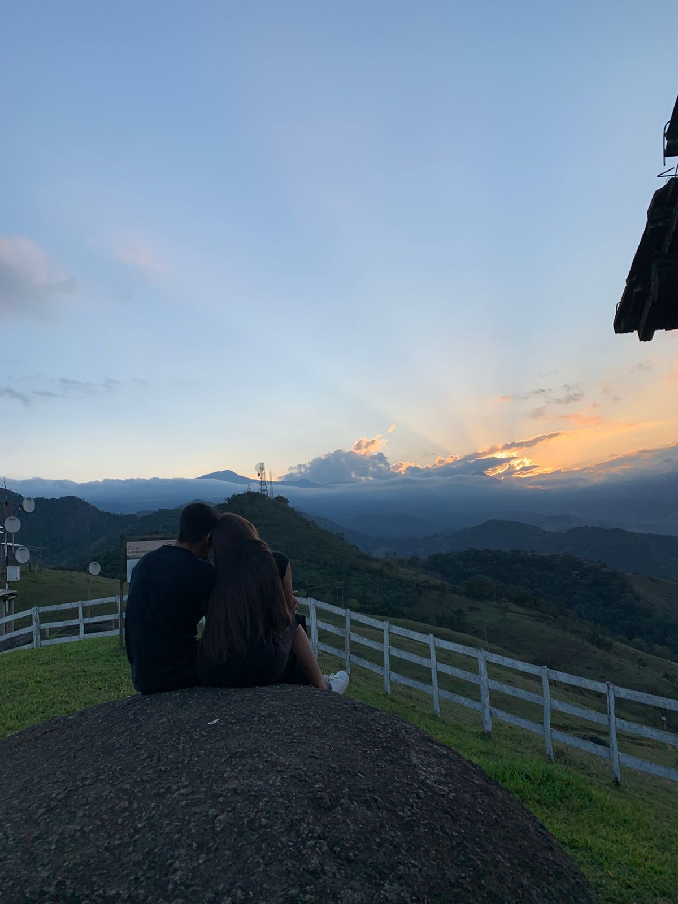
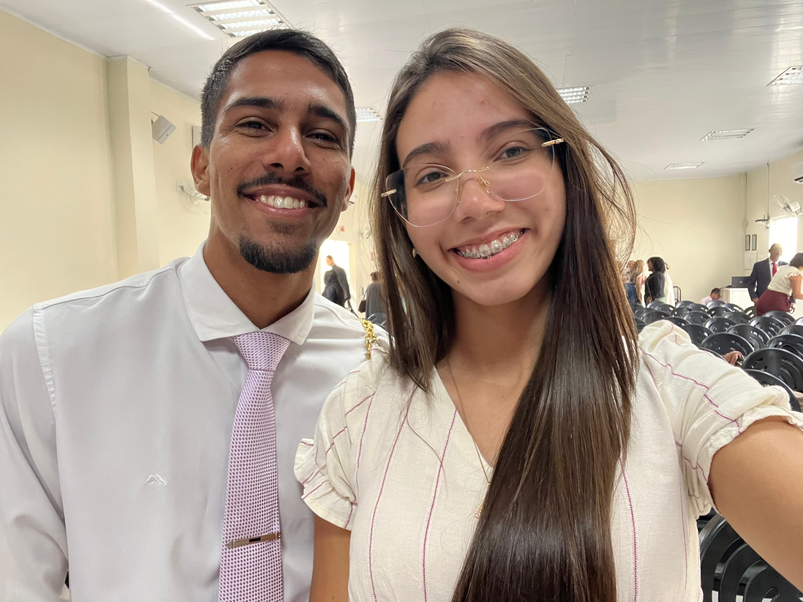
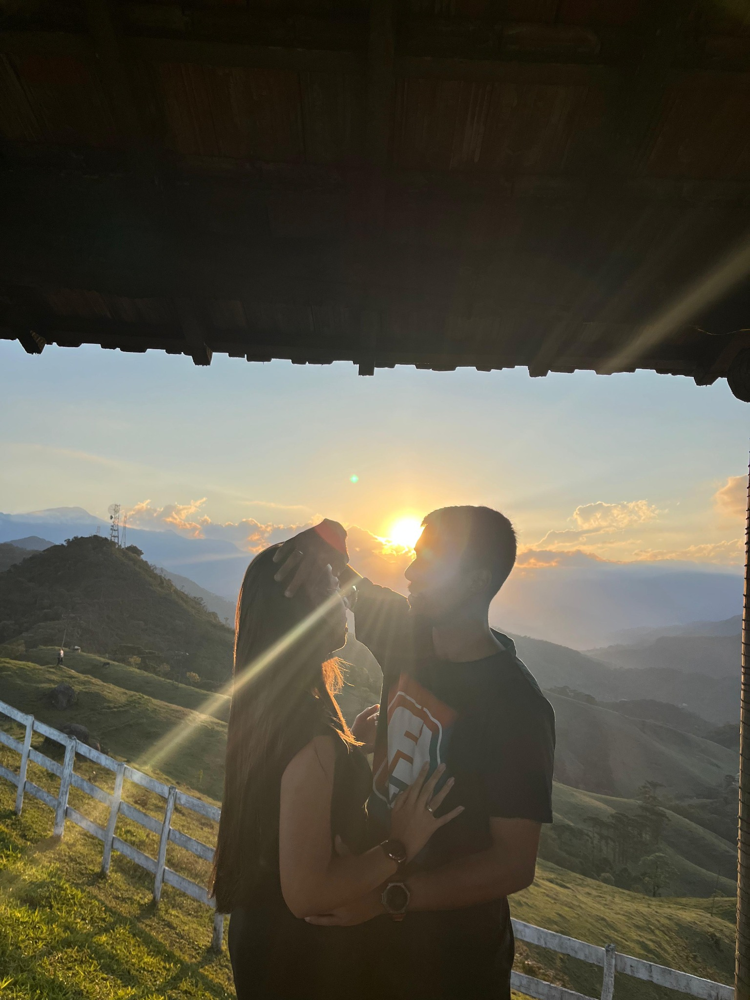
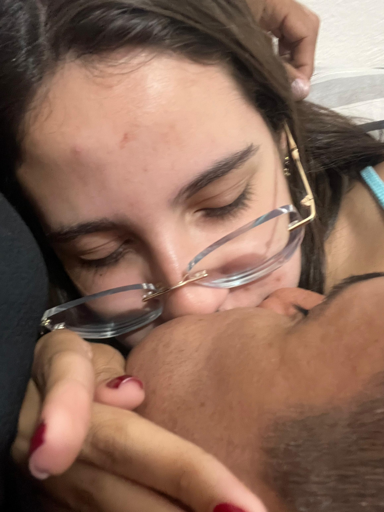

Eu amo
Cada abraço

Cada carinho

Cada sorriso

Cada olhar

Cada toque

Cada beijo
Cada experiência
Cada alegria
Principalmente
Estar com você
Hoje completamos 1 mês juntos, e eu só consigo agradecer por cada instante que vivi ao seu lado. Você é a melhor parte dos meus dias e sou muito feliz por ter você comigo. Agradeço a jeová todos dias por isso. Quero continuar vivendo momentos únicos contigo, assim como já vivemos neste primeiro mês. Quando me vejo no teu olhar me sinto amado, admirado e seguro. E nunca quero perder isso. Lembra-te da citação de O Pequeno Príncipe que te dei junto o buquê de rosas? Se não me engano, um pouco antes naquele diálogo, a raposa disse algo ao príncipe que acho que cai muito bem na gente. Ela disse algo assim: "Eu não sou pra você nada além de uma raposa como a mil outras e tu não és para mim nada além de um garoto como a mil outros. Mas se tu me cativas eu me torno especial... eu serei única para ti no mundo e você será único para mim no mundo." Quando nos tornamos amigos de fato, me sentia contente de estar contigo. Esperava com desejo cada orquestra e, junto com ela, uma mensagem perguntando "Bora?". De primeiro momento, não entendia muito bem aquele sentimento. Foi então que, ao passar dos meses, entendi que era paixão. E que ela crescia mais e mais ao passo que conversavamos mais. Mas eu tinha medo. Medo do que pensariam. Do que você pensava sobre o assunto. Tanto é que mandei uma vez falando que no pior dos mundos eu teria que esperar até abril do ano que vem (Que bom que não tive que esperar kkk). Foi então que, há 1 mês atrás, decidimos oficializar esse compromisso um com o outro e sou grato a ti por confiar em mim dessa forma e (tentar rs) te fazer feliz. No diálogo do Pequeno Príncipe, a raposa disse aquilo porquê o Príncipe tinha uma rosa em seu mundo, que ele achava que era única. Mas então ele viu uma barreira de rosas e ficou chateado achando que a rosa havia o enganado. Mas não era isso, e a raposa o ajudou a enxergar. Ela era única pra ele, pois os dois criaram sentimentos um pelo outro, algo que ele não tem com nenhuma outra rosa. Assim como o Príncipe tinha a sua rosa, eu tenho você. Realmente, o Rei Lemuel tinha razão quando escreveu: "Há muitas esposas capazes, Mas você supera todas elas." Você é especial. Única. E cuidarei de ti com tudo de mim. Que este seja apenas o primeiro de muitos outros meses que ainda virão. Eu te amo! ❤️